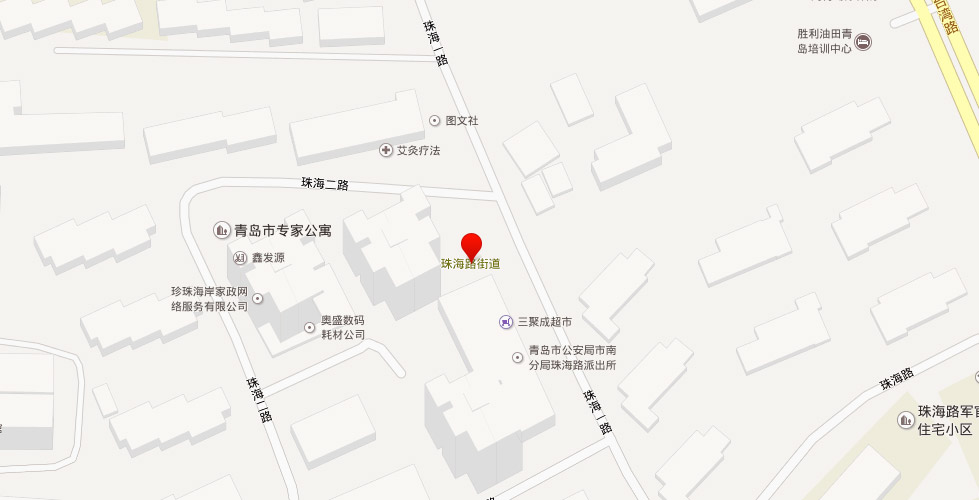

【地址】青岛市市南区珠海一路4号甲
【概况】位于市南区东南部，东连崂山区中韩街道，南临浮山湾，西与北分别与香港中路街道、金门路街道相邻。面积2.88平方米。辖6个社区。
【沿革】1984年9月成立辛家庄街道。1996年，面积7.4平方千米，人口4.9万人，辖辛家庄第一、第二、第三、第四、第五、大尧、逍遥、 屏东路第一、第二、台北路、花莲路、高雄路、长汀路第一、第二、金门路、龙岩路第一、第二、南平路、上杭路、福清路、三小区A片第一、第二、三小区B片第一、第二、第三、三小区C片第一、第二、工疗、四小区甲区、D区、澄海路、台湾路、汕头路33个居委会和北海船厂等10个家委会。
1998年12月，将原辛家庄街道划为金门路、珠海路2个街道；原云南路街道办事处人员统一调至新设立的珠海路街道。2005年末，辖7个社区，居民1.86万户，常住人口5.42万人。
【2011年代码及城乡分类】370202014：～002 111东海路社区 ～003 111善化路社区 ～004 111澳门路社区 ～006 111汕头路社区 ～007 111海口路社区 ～010 111香港花园社区
【香港花园社区】前身是辛家庄，于2000年旧城改造后而成。2004年9月，上环、湾仔、泉州路3个社区合并为香港花园社区。位于珠海路街道北部，由江西路与香港中路交叉路口，沿香港中路向西延伸至香港中路与燕儿岛路与江西路交叉路口，组成三角开区域。面积约0.45平方千米。2005年末，有54个楼座，人口4049户12147人。
【善化路社区】始建于2000年3月。北依香港东路与金门路街道毗邻，东至大麦岛路与崂山区接壤，南至海口路，西至台湾路。面积0.16平方千米。2005年末，常住人口3410户9420余人，流动人口1000余人。居委会驻善化路19号院。
【海口路社区】始建于2000年3月。东与崂山区麦岛接壤，西至台湾路与东海中路社区交界，南临黄海海域，北与善化路社区毗邻。面积0.3平方千米。2005年末，下设银都花园、金都新村、双星花园、台南路1号大院、瑞禾苑、碧海花园、金光都市名家、海怡名都等8个居民小区，建筑住户3010户，已入住2011户4860人。
【汕头路社区】始建于1999年11月。2004年8月11日，台湾路、珠海路、汕头路3个社区合并为汕头路社区。辖区东至台湾路，西至珠海三路，南至珠海路，北至香港中路。面积约0.5平方千米。2005年末，常住人口4077户约12000人。
【澳门路社区】建国前属燕儿岛范围。20世纪90年代末设立燕儿岛路社区，2004年8月更名为澳门路社区。位于浮山湾畔，东起台湾路，西至燕儿岛路，南邻前海，北依东海中路。面积0.72平方千米。2005年末，人口2844户8532人。
【燕儿岛社区】1988年设立北海船厂东山宿舍家委会。2001年6月，北海船厂改制，撤销家委会，设立燕儿岛路第二社区，区域为燕儿岛路7号（原北海船厂宿舍）、9号、11号、13号，香港中路78号。2004年8月更名为燕儿岛社区。位于珠海路街道西北部。东界，北起香港中路与珠海三路交叉路口，沿珠海三路向南至珠海三路与珠海支路交叉路口；南界，东起珠海三路与珠海路交叉路口，向西沿珠海路延伸至珠海路与燕儿岛路交叉路口；西界，南起珠海路与燕儿岛路交叉路口，沿燕儿岛路向北延伸至燕儿岛路与香港中路交叉路口；北界，西起燕儿岛路与香港中路交叉路口，沿香港中路向东延伸至香港中路与珠海三路交叉路口。面积44000平方米。2005年末，人口1224户3672人。
【东海中路社区】以辖区主要道路东海中路命名。2001年3月成立首届东海中路居委会。2004年9月15日成立第二届社区居委会。位于珠海路街道办事处西南处1.8千米。东界，北起台湾路与珠海路交叉路口，沿台湾路向南至台湾与东海中路交叉路口；南界，麦岛海域；西界，南起珠海支路与东海中路交叉路口，沿东海中路向西至东海中路与燕儿岛路交叉路口，沿燕儿岛路向北至燕儿岛屿珠海路交叉路口；北界，西起珠海路与燕儿岛路交叉路口，沿珠海路向东南至珠海路与台湾路交叉路口。面积0.53平方千米。2005年末，人口600户2813人。